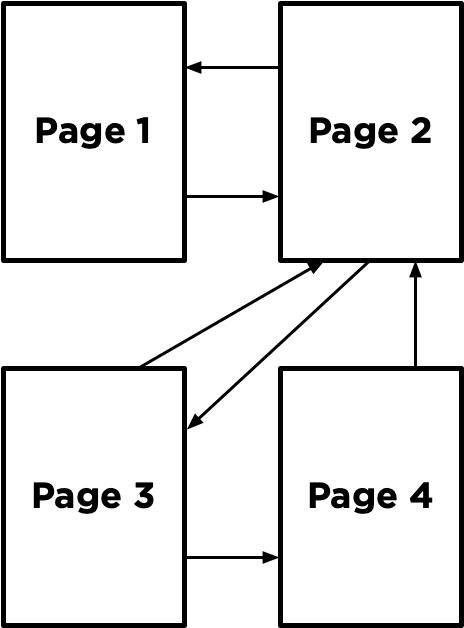
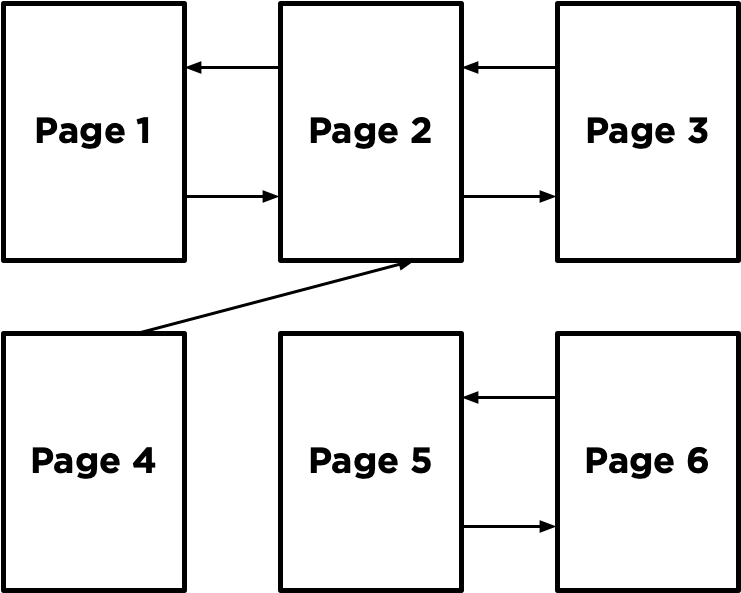
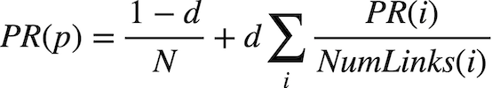

PageRank
The latest version of Python you should use in this course is Python 3.12.
Write an AI to rank web pages by importance.
$ python pagerank.py corpus0
PageRank Results from Sampling (n = 10000)
1.html: 0.2223
2.html: 0.4303
3.html: 0.2145
4.html: 0.1329
PageRank Results from Iteration
1.html: 0.2202
2.html: 0.4289
3.html: 0.2202
4.html: 0.1307
When to Do It
How to Get Help
- Ask questions via Ed!
- Ask questions via any of CS50’s communities!
Background
When search engines like Google display search results, they do so by placing more “important” and higher-quality pages higher in the search results than less important pages. But how does the search engine know which pages are more important than other pages?
One heuristic might be that an “important” page is one that many other pages link to, since it’s reasonable to imagine that more sites will link to a higher-quality webpage than a lower-quality webpage. We could therefore imagine a system where each page is given a rank according to the number of incoming links it has from other pages, and higher ranks would signal higher importance.
But this definition isn’t perfect: if someone wants to make their page seem more important, then under this system, they could simply create many other pages that link to their desired page to artificially inflate its rank.
For that reason, the PageRank algorithm was created by Google’s co-founders (including Larry Page, for whom the algorithm was named). In PageRank’s algorithm, a website is more important if it is linked to by other important websites, and links from less important websites have their links weighted less. This definition seems a bit circular, but it turns out that there are multiple strategies for calculating these rankings.
Random Surfer Model
One way to think about PageRank is with the random surfer model, which considers the behavior of a hypothetical surfer on the internet who clicks on links at random. Consider the corpus of web pages below, where an arrow between two pages indicates a link from one page to another.

The random surfer model imagines a surfer who starts with a web page at random, and then randomly chooses links to follow. If the surfer is on Page 2, for example, they would randomly choose between Page 1 and Page 3 to visit next (duplicate links on the same page are treated as a single link, and links from a page to itself are ignored as well). If they chose Page 3, the surfer would then randomly choose between Page 2 and Page 4 to visit next.
A page’s PageRank, then, can be described as the probability that a random surfer is on that page at any given time. After all, if there are more links to a particular page, then it’s more likely that a random surfer will end up on that page. Moreover, a link from a more important site is more likely to be clicked on than a link from a less important site that fewer pages link to, so this model handles weighting links by their importance as well.
One way to interpret this model is as a Markov Chain, where each page represents a state, and each page has a transition model that chooses among its links at random. At each time step, the state switches to one of the pages linked to by the current state.
By sampling states randomly from the Markov Chain, we can get an estimate for each page’s PageRank. We can start by choosing a page at random, then keep following links at random, keeping track of how many times we’ve visited each page. After we’ve gathered all of our samples (based on a number we choose in advance), the proportion of the time we were on each page might be an estimate for that page’s rank.
However, this definition of PageRank proves slightly problematic, if we consider a network of pages like the below.

Imagine we randomly started by sampling Page 5. We’d then have no choice but to go to Page 6, and then no choice but to go to Page 5 after that, and then Page 6 again, and so forth. We’d end up with an estimate of 0.5 for the PageRank for Pages 5 and 6, and an estimate of 0 for the PageRank of all the remaining pages, since we spent all our time on Pages 5 and 6 and never visited any of the other pages.
To ensure we can always get to somewhere else in the corpus of web pages, we’ll introduce to our model a damping factor d. With probability d (where d is usually set around 0.85), the random surfer will choose from one of the links on the current page at random. But otherwise (with probability 1 - d), the random surfer chooses one out of all of the pages in the corpus at random (including the one they are currently on).
Our random surfer now starts by choosing a page at random, and then, for each additional sample we’d like to generate, chooses a link from the current page at random with probability d, and chooses any page at random with probability 1 - d. If we keep track of how many times each page has shown up as a sample, we can treat the proportion of states that were on a given page as its PageRank.
Iterative Algorithm
We can also define a page’s PageRank using a recursive mathematical expression. Let PR(p) be the PageRank of a given page p: the probability that a random surfer ends up on that page. How do we define PR(p)? Well, we know there are two ways that a random surfer could end up on the page:
- With probability
1 - d, the surfer chose a page at random and ended up on pagep. - With probability
d, the surfer followed a link from a pageito pagep.
The first condition is fairly straightforward to express mathematically: it’s 1 - d divided by N, where N is the total number of pages across the entire corpus. This is because the 1 - d probability of choosing a page at random is split evenly among all N possible pages.
For the second condition, we need to consider each possible page i that links to page p. For each of those incoming pages, let NumLinks(i) be the number of links on page i. Each page i that links to p has its own PageRank, PR(i), representing the probability that we are on page i at any given time. And since from page i we travel to any of that page’s links with equal probability, we divide PR(i) by the number of links NumLinks(i) to get the probability that we were on page i and chose the link to page p.
This gives us the following definition for the PageRank for a page p.

In this formula, d is the damping factor, N is the total number of pages in the corpus, i ranges over all pages that link to page p, and NumLinks(i) is the number of links present on page i.
How would we go about calculating PageRank values for each page, then? We can do so via iteration: start by assuming the PageRank of every page is 1 / N (i.e., equally likely to be on any page). Then, use the above formula to calculate new PageRank values for each page, based on the previous PageRank values. If we keep repeating this process, calculating a new set of PageRank values for each page based on the previous set of PageRank values, eventually the PageRank values will converge (i.e., not change by more than a small threshold with each iteration).
In this project, you’ll implement both such approaches for calculating PageRank – calculating both by sampling pages from a Markov Chain random surfer and by iteratively applying the PageRank formula.
Getting Started
- Download the distribution code from https://cdn.cs50.net/ai/2023/x/projects/2/pagerank.zip and unzip it.
Understanding
Open up pagerank.py. Notice first the definition of two constants at the top of the file: DAMPING represents the damping factor and is initially set to 0.85. SAMPLES represents the number of samples we’ll use to estimate PageRank using the sampling method, initially set to 10,000 samples.
Now, take a look at the main function. It expects a command-line argument, which will be the name of a directory of a corpus of web pages we’d like to compute PageRanks for. The crawl function takes that directory, parses all of the HTML files in the directory, and returns a dictionary representing the corpus. The keys in that dictionary represent pages (e.g., "2.html"), and the values of the dictionary are a set of all of the pages linked to by the key (e.g. {"1.html", "3.html"}).
The main function then calls the sample_pagerank function, whose purpose is to estimate the PageRank of each page by sampling. The function takes as arguments the corpus of pages generated by crawl, as well as the damping factor and number of samples to use. Ultimately, sample_pagerank should return a dictionary where the keys are each page name and the values are each page’s estimated PageRank (a number between 0 and 1).
The main function also calls the iterate_pagerank function, which will also calculate PageRank for each page, but using the iterative formula method instead of by sampling. The return value is expected to be in the same format, and we would hope that the output of these two functions should be similar when given the same corpus!
Specification
Many students have had issues with the autograders on this assignment because of how their dictionaries are constructed (that is to say, improperly). It is imperative that you read this specification carefully and implement its requirements exactly.
Complete the implementation of transition_model, sample_pagerank, and iterate_pagerank.
The transition_model should return a dictionary representing the probability distribution over which page a random surfer would visit next, given a corpus of pages, a current page, and a damping factor.
- The function accepts three arguments:
corpus,page, anddamping_factor.- The
corpusis a Python dictionary mapping a page name to a set of all pages linked to by that page. - The
pageis a string representing which page the random surfer is currently on. - The
damping_factoris a floating point number representing the damping factor to be used when generating the probabilities.
- The
- The return value of the function should be a Python dictionary with one key for each page in the corpus. Each key should be mapped to a value representing the probability that a random surfer would choose that page next. The values in this returned probability distribution should sum to
1.- With probability
damping_factor, the random surfer should randomly choose one of the links frompagewith equal probability. - With probability
1 - damping_factor, the random surfer should randomly choose one of all pages in the corpus with equal probability.
- With probability
- For example, if the
corpuswere{"1.html": {"2.html", "3.html"}, "2.html": {"3.html"}, "3.html": {"2.html"}}, thepagewas"1.html", and thedamping_factorwas0.85, then the output oftransition_modelshould be{"1.html": 0.05, "2.html": 0.475, "3.html": 0.475}. This is because with probability0.85, we choose randomly to go from page 1 to either page 2 or page 3 (so each of page 2 or page 3 has probability0.425to start), but every page gets an additional0.05because with probability0.15we choose randomly among all three of the pages. - If
pagehas no outgoing links, thentransition_modelshould return a probability distribution that chooses randomly among all pages with equal probability. (In other words, if a page has no links, we can pretend it has links to all pages in the corpus, including itself.)
The sample_pagerank function should accept a corpus of web pages, a damping factor, and a number of samples, and return an estimated PageRank for each page.
- The function accepts three arguments:
corpus, adamping_factor, andn.- The
corpusis a Python dictionary mapping a page name to a set of all pages linked to by that page. - The
damping_factoris a floating point number representing the damping factor to be used by the transition model. -
nis an integer representing the number of samples that should be generated to estimate PageRank values.
- The
- The return value of the function should be a Python dictionary with one key for each page in the corpus. Each key should be mapped to a value representing that page’s estimated PageRank (i.e., the proportion of all the samples that corresponded to that page). The values in this dictionary should sum to
1. - The first sample should be generated by choosing from a page at random.
- For each of the remaining samples, the next sample should be generated from the previous sample based on the previous sample’s transition model.
- You will likely want to pass the previous sample into your
transition_modelfunction, along with thecorpusand thedamping_factor, to get the probabilities for the next sample. - For example, if the transition probabilities are
{"1.html": 0.05, "2.html": 0.475, "3.html": 0.475}, then 5% of the time the next sample generated should be"1.html", 47.5% of the time the next sample generated should be"2.html", and 47.5% of the time the next sample generated should be"3.html".
- You will likely want to pass the previous sample into your
- You may assume that
nwill be at least1.
The iterate_pagerank function should accept a corpus of web pages and a damping factor, calculate PageRanks based on the iteration formula described above, and return each page’s PageRank accurate to within 0.001.
- The function accepts two arguments:
corpusanddamping_factor.- The
corpusis a Python dictionary mapping a page name to a set of all pages linked to by that page. - The
damping_factoris a floating point number representing the damping factor to be used in the PageRank formula.
- The
- The return value of the function should be a Python dictionary with one key for each page in the corpus. Each key should be mapped to a value representing that page’s PageRank. The values in this dictionary should sum to
1. - The function should begin by assigning each page a rank of
1 / N, whereNis the total number of pages in the corpus. - The function should then repeatedly calculate new rank values based on all of the current rank values, according to the PageRank formula in the “Background” section. (i.e., calculating a page’s PageRank based on the PageRanks of all pages that link to it).
- A page that has no links at all should be interpreted as having one link for every page in the corpus (including itself).
- This process should repeat until no PageRank value changes by more than
0.001between the current rank values and the new rank values.
You should not modify anything else in pagerank.py other than the three functions the specification calls for you to implement, though you may write additional functions and/or import other Python standard library modules. You may also import numpy or pandas, if familiar with them, but you should not use any other third-party Python modules.
Hints
- You may find the functions in Python’s
randommodule helpful for making decisions pseudorandomly.
Testing
If you’d like, you can execute the below (after setting up check50 on your system) to evaluate the correctness of your code. This isn’t obligatory; you can simply submit following the steps at the end of this specification, and these same tests will run on our server. Either way, be sure to compile and test it yourself as well!
check50 ai50/projects/2024/x/pagerank
Execute the below to evaluate the style of your code using style50.
style50 pagerank.py
Remember that you may not import any modules (other than those in the Python standard library) other than those explicitly authorized herein. Doing so will not only prevent check50 from running, but will also prevent submit50 from scoring your assignment, since it uses check50. If that happens, you’ve likely imported something disallowed or otherwise modified the distribution code in an unauthorized manner, per the specification. There are certainly tools out there that trivialize some of these projects, but that’s not the goal here; you’re learning things at a lower level. If we don’t say here that you can use them, you can’t use them.
How to Submit
- Visit this link, log in with your GitHub account, and click Authorize cs50. Then, check the box indicating that you’d like to grant course staff access to your submissions, and click Join course.
-
Install Git and, optionally, install
submit50. - If you’ve installed
submit50, executesubmit50 ai50/projects/2024/x/pagerankOtherwise, using Git, push your work to
https://github.com/me50/USERNAME.git, whereUSERNAMEis your GitHub username, on a branch calledai50/projects/2024/x/pagerank.
If you submit your code directly using Git, rather than submit50, do not include files or folders other than those you are actually instructed to modify in the specification above. (That is to say, don’t upload your entire directory!)
Work should be graded within five minutes. You can then go to https://cs50.me/cs50ai to view your current progress!